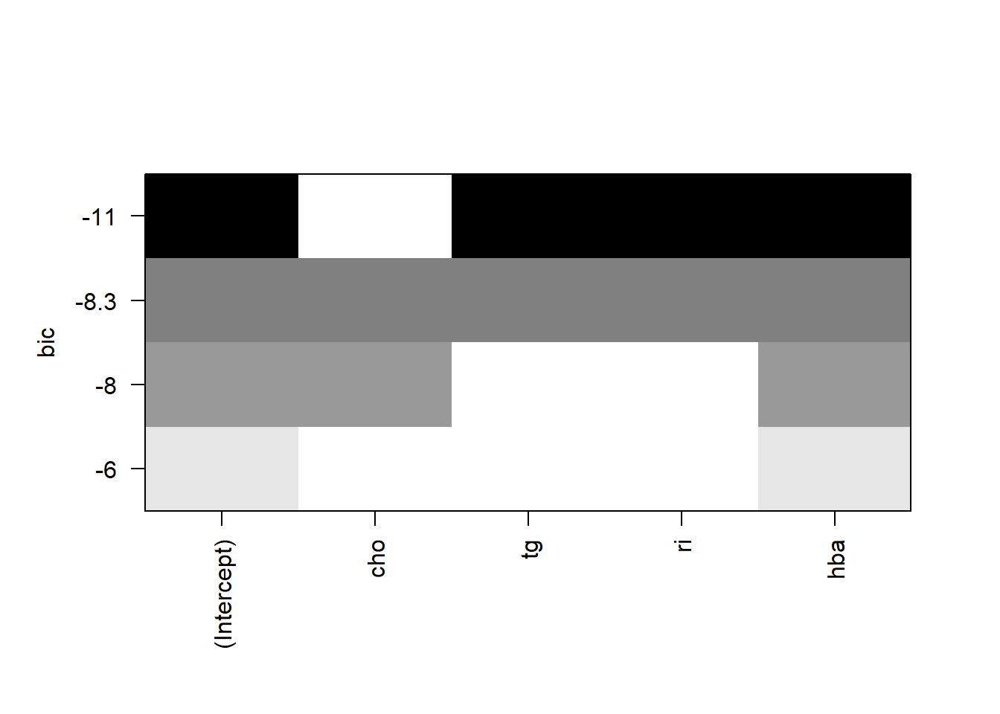

df <- data.frame(
cho = c(5.68,3.79,6.02,4.85,4.60,6.05,4.90,7.08,3.85,4.65,4.59,4.29,7.97,
6.19,6.13,5.71,6.40,6.06,5.09,6.13,5.78,5.43,6.50,7.98,11.54,5.84,
3.84),
tg = c(1.90,1.64,3.56,1.07,2.32,0.64,8.50,3.00,2.11,0.63,1.97,1.97,1.93,
1.18,2.06,1.78,2.40,3.67,1.03,1.71,3.36,1.13,6.21,7.92,10.89,0.92,
1.20),
ri = c(4.53, 7.32,6.95,5.88,4.05,1.42,12.60,6.75,16.28,6.59,3.61,6.61,7.57,
1.42,10.35,8.53,4.53,12.79,2.53,5.28,2.96,4.31,3.47,3.37,1.20,8.61,
6.45),
hba = c(8.2,6.9,10.8,8.3,7.5,13.6,8.5,11.5,7.9,7.1,8.7,7.8,9.9,6.9,10.5,8.0,
10.3,7.1,8.9,9.9,8.0,11.3,12.3,9.8,10.5,6.4,9.6),
fpg = c(11.2,8.8,12.3,11.6,13.4,18.3,11.1,12.1,9.6,8.4,9.3,10.6,8.4,9.6,10.9,
10.1,14.8,9.1,10.8,10.2,13.6,14.9,16.0,13.2,20.0,13.3,10.4)
)13 变量筛选之最优子集
最优子集法，又叫全子集回归法，全局择优法。
对于特征选择，最优子集回归是逐步回归的一个替代方案。我们在之前的推文中已经介绍过逐步回归了：
在最优子集回归中，算法使用所有可能的特征组合来拟合模型，所以，如果有3个特征，将生成7个模型（一个简单的排列组合问题）。所以这种方法的问题就是，如果数据集有多个特征，工作量就会非常大。当特征数多于观测数时（p大于n），这个方法的效果就不会很好。
目前看来最优子集筛选变量只适用于线性回归。
13.1 准备数据
使用孙振球版医学统计学例15-1的数据。
13.2 建立模型
使用全部的4个变量建立回归方程：
f <- lm(fpg ~ cho + tg + ri + hba, data = df)
summary(f)
##
## Call:
## lm(formula = fpg ~ cho + tg + ri + hba, data = df)
##
## Residuals:
## Min 1Q Median 3Q Max
## -3.6268 -1.2004 -0.2276 1.5389 4.4467
##
## Coefficients:
## Estimate Std. Error t value Pr(>|t|)
## (Intercept) 5.9433 2.8286 2.101 0.0473 *
## cho 0.1424 0.3657 0.390 0.7006
## tg 0.3515 0.2042 1.721 0.0993 .
## ri -0.2706 0.1214 -2.229 0.0363 *
## hba 0.6382 0.2433 2.623 0.0155 *
## ---
## Signif. codes: 0 '***' 0.001 '**' 0.01 '*' 0.05 '.' 0.1 ' ' 1
##
## Residual standard error: 2.01 on 22 degrees of freedom
## Multiple R-squared: 0.6008, Adjusted R-squared: 0.5282
## F-statistic: 8.278 on 4 and 22 DF, p-value: 0.000312113.3 最优子集法
使用最优子集法筛选变量，借助leaps包实现。
library(leaps)
leaps <- regsubsets(fpg ~ cho + tg + ri + hba, data = df)
summary(leaps)
## Subset selection object
## Call: regsubsets.formula(fpg ~ cho + tg + ri + hba, data = df)
## 4 Variables (and intercept)
## Forced in Forced out
## cho FALSE FALSE
## tg FALSE FALSE
## ri FALSE FALSE
## hba FALSE FALSE
## 1 subsets of each size up to 4
## Selection Algorithm: exhaustive
## cho tg ri hba
## 1 ( 1 ) " " " " " " "*"
## 2 ( 1 ) "*" " " " " "*"
## 3 ( 1 ) " " "*" "*" "*"
## 4 ( 1 ) "*" "*" "*" "*"13.4 查看结果
查看rss最小的结果：
which.min(summary(leaps)$rss)
## [1] 4结果表明有4个特征的模型具有最小的RSS，这是很明显的哈，因为这里就有4个自变量。。。
增加特征数量必然会减少RSS！而且必然会增加R方。我们即使添加一个完全不相关的特征，比如洛杉矶湖人队的胜场数，模型的RSS也会减少，R方也会增加。
所以只看RSS并不能帮助我们很好的选择变量。
我们这里讨论4种用于特征选择的统计方法： - 赤池信息量准则 - 马洛斯的Cp - 贝叶斯准则 - 调整的R方
前三种方法的目标是追求统计量的值最小化，调整的R方的目标是追求统计量的值最大化。这些统计方法的目的是建立一个尽可能简约的模型，换句话说，要对模型复杂性进行“惩罚”。
在线性模型中，AIC和Cp成正比，所以我们只需关注Cp即可。
下面以CP为纵坐标进行可视化：
par(mfrow=c(1,2))
plot(summary(leaps)$cp,type = "l",xlab = "number of features",ylab = "cp")
plot(leaps, scale = "Cp") # 通过Cp判断
左图横坐标是自变量数量，纵坐标是CP值大小，可以看到在变量数量为3时，CP是最小的；右边的图也是一样的意思，先看纵坐标，CP最小是3.2，此时对应的黑色块是tg,ri,hba这3个变量。
也可以用其他指标作为纵坐标进行可视化，比如调整的R2adjr2:
plot(leaps, scale = "adjr2")
或者BIC，BIC和AIC意思是一样的：
plot(leaps, scale = "bic")
可以看到3种方法得到的结果都是一样的，都是选出了tg,ri,hba这3个变量，但有时结果也是不太一样的，不用纠结。